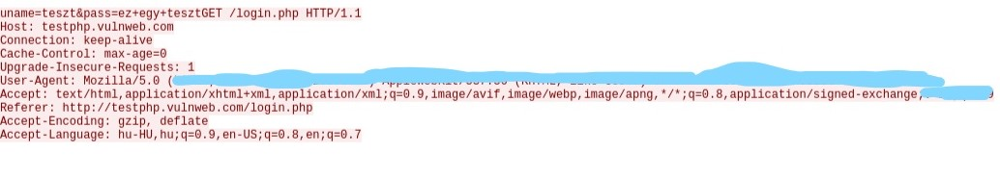

MiTM támadás
Mit is jelent pontosan a MiTM attack? Ez azt jelenti, hogy Man in The Middle, vagyis ermber a középpontban. Ha elolvasod az egész cikket tisztába leszel, hogy mi is a MiTM támadás pontosan és, hogyan lehetsz te is a middle man.
A lényege az MiTM támadásnak, hogy a támadó számítógépén keresztül fog menni minden egyes adat amit a te eszközöd és a router komunikál.
Viszont nyugi nem kell annyira félni, mert a legtöbb adatod kódolással védett, de nem mindegyik. Egy szimpla http bejelentkezéses oldal adatait egyszerűbb ellopni mint gondolnád.
Mielőtt belevágnánk iratkozz fel az oldal hírlevelére, ha tetszenek a tartalmak :)
Feliratkozok a hírlevélre
Mindenek előtt kelleni fog egy Linux (Ajánlott a Kali Linux, de egy Ubuntu vagy bármilyen Debian is megteszi csak arra még le kell telepítened a következőket:
Ha nem szeretnél dualboot-os számítógépet van megoldás, használj VirtualBox-ot.
Mostmár elkezdhetjük a támadást:)
CSAK SAJÁT HÁLÓZATON PRÓBÁLD KI! NEM VÁLLALOK FELELŐSÉGET SEMMILYEN BŰNCSELEKMÉNYÉRT!
Nyiss egy terminált és írd be a következő parancsot:
Most ezzel a paranccsal át lett írányítva az egész wifi trafick a te számítógépeden keresztül a routerhez.
Most nyisd meg a wireshark nevű appot és menj rá a wlan0-ra.
Ha rámentél rengeteg IP címet és adatot fogsz látni, de ne aggódj írd be a felső mezőbe, hogy http ezzel leszűkítve a kereséseket
Ha ezt beírtad akkor mostmár csak a http requestes oldalakat fogod látni és az http-s oldalak kiírják az adatokat;)
Ennek az oldalnak a segítségével letesztelheted, hogy működik-e: http://testphp.vulnweb.com/login.php
ha bejelentkeztél random adatokkal akkor meg fog jelenni a bejelentkezési tevékenységed, ha azt a wifit használod amit az ettercap-nél használtál.
Na de hogyan is nézzük meg, hogy milyen adatokkal jelentkeztél be? Jobbclick és a következő képen láthatod, hogy hogyan jutsz el az adatokig:
Ha rámentél a Http Stream-re akkor már csak ki kell keresned az adatokat:
Igazából ennyi is lett volna köszi, hogy elolvastad:)
{kind=link}
{kind=link}
{kind=link}